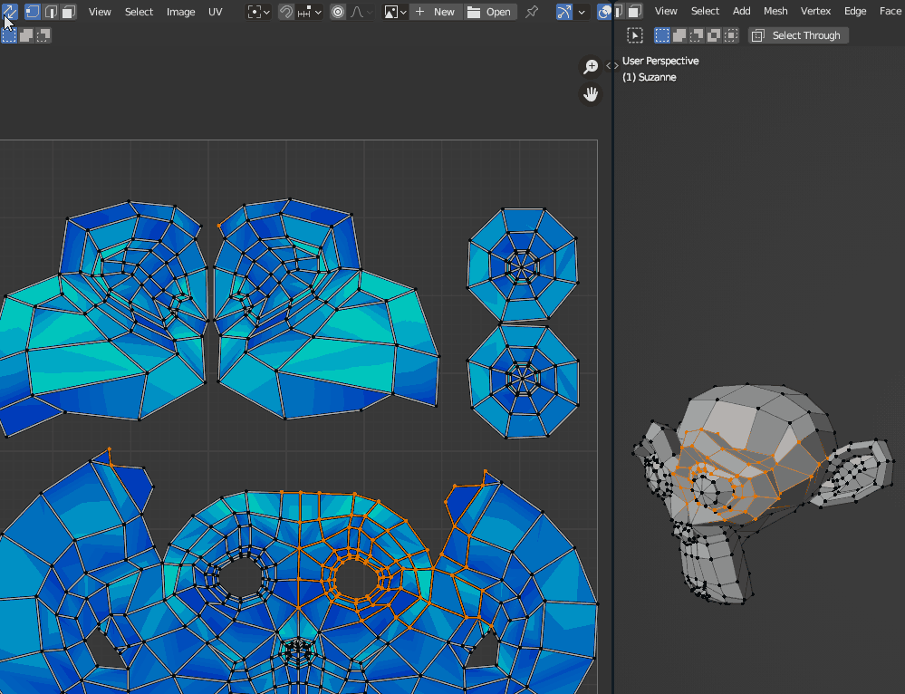

UV
Faster UV editing.
Smart UV Sync
RMBUV EditorRight-click toggles UV Sync and keeps your selection.


Shortcuts
Toggle in preferences: UV Tools
UV Cut
X · Shift XUV EditorMaya-style cut: X cuts and moves the island, Shift X just cuts.
Shortcuts
Needs UV Sync off. If it's on, the first press turns it off.
Toggle in preferences: UV Tools
Remove Seam
Alt 2Edit ModeClear seams and sharp edges on the selection.
Shortcuts
Toggle in preferences: UV Tools
More UV Tools
UV PiesUnwrap in Place, Quick Pack, Isolate Island, Orient to Edge and more live in the UV Pies.